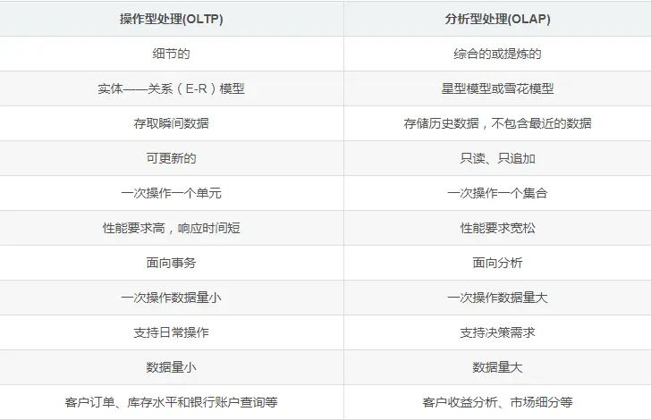
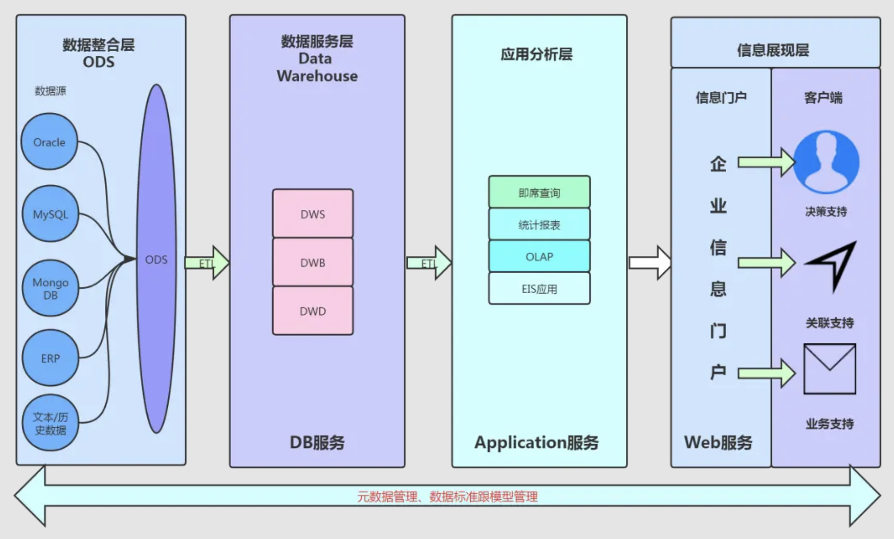
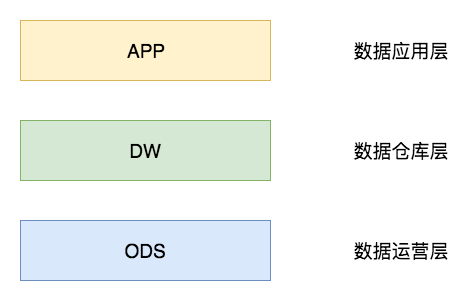
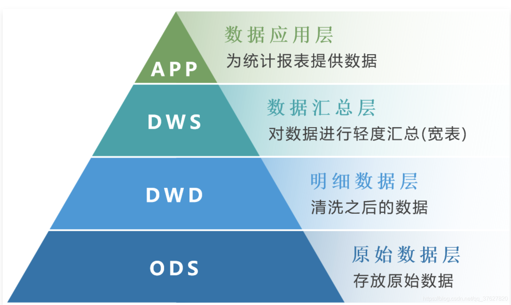
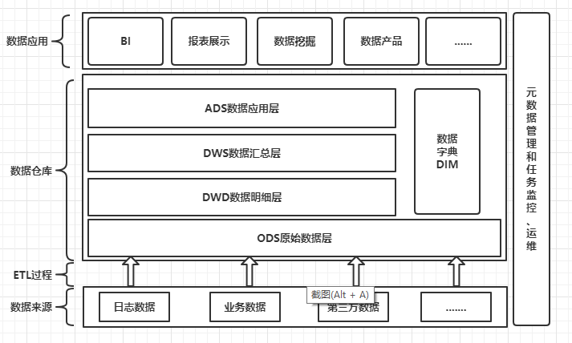
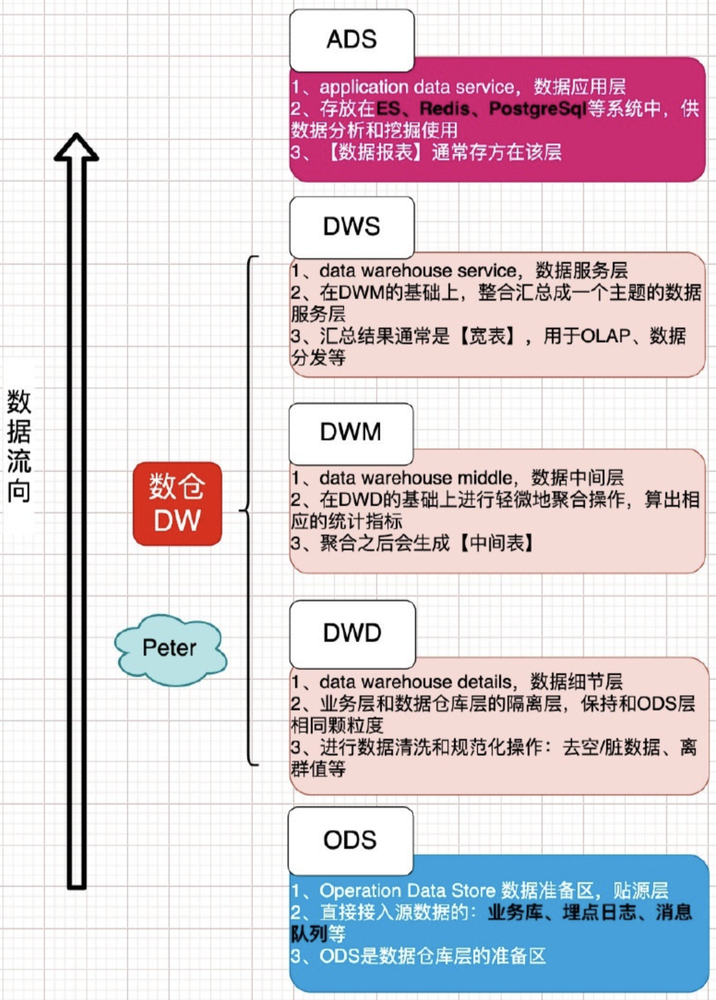
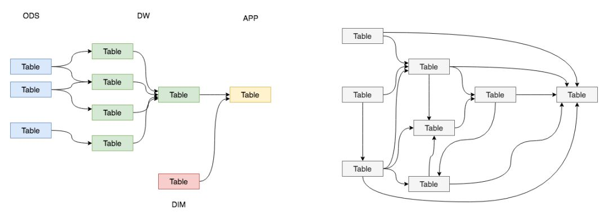

浅析数仓
浅析数仓
随着互联网及物联网等技术发展，越来越多的数据被生成，如何有效利用这些数据就成为了企业决胜的法宝了。大型公司会基于数据做出BI、推荐系统、决策支持、统计分析、报表等业务。
OLTP VS OLAP
1970年随着关系数据库理论的提出，诞生了一系列经典的RDBMS，如MySQL、Oracle、SQL Server、DB2等。这些RDBMS为社会信息化的发展做出的重大贡献。然而随着数据库使用范围的不断扩大，它被逐步划分为操作型数据库OLTP（在线事务处理）跟分析型数据库OLAP（在线分析处理）。
OLTP
操作型数据库OLTP（On-Line Transaction Processing 在线事务处理）也可以称面向交易的处理系统，它是针对具体业务在数据库联机的日常操作，通常对记录进行CRUD。OLTP模式下用户较为关心操作的响应时间、数据的安全性、完整性和并发支持的用户数等问题。传统的数据库系统作为数据管理的主要手段，主要用于操作型处理。
OLAP
分析型数据库OLAP（On-Line Analytical Processing）叫在线分析处理，主要用于历史数据分析。这类数据库作为公司的单独数据存储，负责利用历史数据对公司各主题域进行统计分析。为啥要分成操作型跟分析型呢？原因是他们有太多不同了！
操作型OLTP VS 分析型OLAP
之所以区分为操作型跟分析型，那是因为这俩的核心功能不同！前者主要是面向操作，后者主要是面向分析，在细节上存在众多差异。
数据组成差别
- 数据时间范围不同：一般操作型数据库只存放90天内数据，分析型数据存放数年内数据，所以这俩要进行物理分离。
- 数据细节差异不同：操作型数据库主要存放细节数据，汇总数据是动态技术而成的。分析型数据库中既存放细节数据又存放用户关系的汇总数据。
- 数据时间表示不同：操作型数据库反应的是当前状态，分析师数据库中既有当前状态又有过去各时刻的快照数据。
技术差别
- 查询数量跟频率不同：操作型数据库查询频率高但量小，分析型数据库查询量大但频率低。
- 数据更新不同：操作型数据库设计到用户CRUD。分析型数据库属于归档性质存储，只提供查询。
- 数据冗余性不同：操作型数据库在设计表的时候就会减少数据冗余避免更新复杂。分析型数据库中则只有查询功能，因此数据冗余性一般都存在。
功能差别
- 数据读者不同：操作型数据的使用者是业务环节下的各个角色，比如用户、商家等。分析型数据库一般只有研发跟数据分析人员专门使用。
- 定位不同：操作型数据库主要是面向应用层的数据库，是为了支持具体业务而存在的。分析型数据库是针对特定业务主体域的分析人物而创建的，是面向主体型数据库。
数仓
数仓简介
随着人类IT发展，数据越来越多被产生，并且这些数据还可能跨部门，跨业务。如何把数据集成起来进行OLAP是个巨大挑战。数据仓库(Data Warehouse)应运而生，数据仓库是一个面向主题的、集成的、相对稳定的、反映历史变化的数据集合，用于支持管理中的决策制定。数据仓库是伴随着企业信息化发展起来的，在企业信息化的过程中，随着信息化工具的升级和新工具的应用，数据量变的越来越大，数据格式越来越多，决策要求越来越苛刻，数据仓库技术也在不停的发展。数据仓库的趋势：
- 实时数据仓库以满足实时化&自动化决策需求。
- 大数据&数据湖以支持大量&复杂数据类型(文本、图像、视频、音频)。
对于数仓可以理解为原来各个数据孤岛中的数据可能存储位置、存储格式、编程语言等各个方面不同。数仓要做的就是把数据按照所需格式提取出来，进行转换、过滤、清洗。最终装载到数据仓库，整个过程也ETL。
- 提取 Extraction：表示从操作型数据库搜集指定数据。
- 转换 Transformation：表示将数据转化为指定格式，并进行数据清洗保证数据质量。
- 加载 Load：加载过程表示将转换过后满足指定格式的数据加载进数据仓库。
随着数仓的不断普及跟使用，信息产业就开始从以关系型数据库为基础的运营式系统慢慢向决策支持系统发展。这个决策支持系统，其实就是我们现在说的商务智能（Business Intelligence），即BI。可以这么说，数据仓库为OLAP解决了数据来源问题，数据仓库和OLAP互相促进发展，进一步驱动了商务智能的成熟，但真正将商务智能赋予智能的，其实是数据挖掘。
数仓特征
面向主题
面向主题特性是数据仓库和操作型数据库的根本区别。
- 操作型数据库是为了支撑各种业务而建立，是按照业务功能进行组织的。
- 分析型数据库则是为了对从各种繁杂业务中抽象出来的分析主题进行分析而建立。
- 所谓主题是指用户使用数据仓库进行决策时所关心的重点方面，如：收入、客户、销售渠道等。所谓面向主题，是指数据仓库内的信息是按主题进行组织的。
集成性
集成性指数据仓库中的信息不是从各个业务系统中简单抽取出来的，而是经过一系列加工、整理和汇总的过程，因此数据仓库中的信息是关于整个企业的一致的全局信息。
企业范围
数据仓库内的数据是面向公司全局的。比如：某个主题域为成本，则全公司和成本有关的信息都会被汇集进来。
历史性
较之操作型数据库，数据仓库的时间跨度通常比较长。前者通常保存几个月，后者可能几年甚至几十年。
时变性
时变性是指数据仓库包含来自其时间范围不同时间段的数据快照。有了这些数据快照以后，用户便可将其汇总，通过这些信息，可以对企业的发展历程和未来趋势做出定量分析和预测。
数仓架构
数仓的整体建构图：
数仓分层架构
数仓分层并没有严格的固定格式，各个业务可以根据自身的业务架构和决策支持个性化数仓分层机构，常见的通用的数仓分层有三层架构和四层架构，如下：
三层架构
- 数据运营层（ ODS ）
- 数据仓库层（DW）
- DWD：数据明细层：DWD（Data Warehouse Detail）
- DWM：数据中间层：DWM（Data WareHouse Middle）
- DWS：数据服务层：DWS（Data WareHouse Servce）
- 数据应用层（APP）
如下图所示。简单来讲，我们可以理解为：ODS层存放的是接入的原始数据，DW层是存放我们要重点设计的数据仓库中间层数据，APP是面向业务定制的应用数据。
四层架构
将三层架构中的DWD和DWS凸显出来并弱化DWM层就形成了四层架构，如下图：
数据分层是数据仓库设计中一个十分重要的环节，良好的分层设计能够让整个数据体系更容易被理解和使用。

图解数据分层
为什么要分层
数据仓库中涉及到的问题：
- 为什么要做数据仓库？
- 为什么要做数据质量管理？
- 为什么要做元数据管理？
- 数仓分层中每个层的作用是什么？
- ……
在实际的工作中，我们都希望自己的数据能够有顺序地流转，设计者和使用者能够清晰地知道数据的整个声明周期，比如下面左图。但是，实际情况下，我们所面临的数据状况很有可能是复杂性高、且层级混乱的，我们可能会做出一套表依赖结构混乱，且出现循环依赖的数据体系，比如下面的右图。
为了解决我们可能面临的问题，需要一套行之有效的数据组织、管理和处理方法，来让我们的数据体系更加有序，这就是数据分层。数据分层的好处：
- 清晰数据结构：让每个数据层都有自己的作用和职责，在使用和维护的时候能够更方便和理解
- 复杂问题简化：将一个复杂的任务拆解成多个步骤来分步骤完成，每个层只解决特定的问题
- 统一数据口径：通过数据分层，提供统一的数据出口，统一输出口径
- 减少重复开发：规范数据分层，开发通用的中间层，可以极大地减少重复计算的工作
数据分层
每个公司的业务都可以根据自己的业务需求分层不同的层次；目前比较流行的数据分层：数据运营层、数据仓库层、数据服务层。
数据运营层ODS
数据运营层：Operation Data Store 数据准备区，也称为贴源层。数据源中的数据，经过抽取、洗净、传输，也就是ETL过程之后进入本层。现在可选择的大数据同步技术也比较多，如：datax，canal，kafka等。这一层的主要目的是把源系统的数据基本原样（有些数据敏感等级高不同步）的同步到大数据平台，因此比较容易进行方案的统一。该层的主要功能：
- ODS是后面数据仓库层的准备区；
- 为DWD层提供原始数据；
- 减少对业务系统的影响；
为了考虑后续可能需要追溯数据问题，因此对于这一层就不建议做过多的数据清洗工作，原封不动地接入原始数据即可，这层的数据是后续数据仓库加工数据的来源。数据来源的方式：
- 业务库：sqoop定时抽取数据；实时方面考虑使用canal监听mysql的binlog日志，实时接入即可
- 埋点日志：日志一般是以文件的形式保存，可以选择使用flume来定时同步；可以使用spark streaming或者Flink、Kafka来实时接入
- 消息队列：来自ActiveMQ、Kafka的数据等
数据仓库层
DW为数据仓库层，DW层的数据应该是一致的、准确的、干净的数据。主要有清洗，拆分，整合，标准化，备份，隔离几个任务。即对源系统数据进行清洗后的数据。这一层的数据一般是遵循数据库第三范式的，在DW层会保存BI系统中所有的历史数据，例如保存10年的数据。数据仓库层从上到下，又可以分为3个层：数据细节层DWD、数据中间层DWM、数据服务层DWS。
数据细节层DWD，data warehouse details
该层是业务层和数据仓库的隔离层，保持和ODS层一样的数据颗粒度；主要是对ODS数据层做一些数据的清洗和规范化的操作，比如去除空数据、脏数据、离群值等。
为了提高数据明细层的易用性，该层通常会才采用一些维度退化方法，将维度退化至事实表中，减少事实表和维表的关联。
数据中间层DWM | Data Warehouse Middle
该层是在DWD层的数据基础上，对数据做一些轻微的聚合操作，生成一些列的中间结果表，提升公共指标的复用性，减少重复加工的工作。
简答来说，对通用的核心维度进行聚合操作，算出相应的统计指标。
数据服务层DWS | Data Warehouse Service
该层是基于DWM上的基础数据，整合汇总成分析某一个主题域的数据服务层，一般是宽表，用于提供后续的业务查询，OLAP分析，数据分发等。一般来说，该层的数据表会相对较少；一张表会涵盖比较多的业务内容，由于其字段较多，因此一般也会称该层的表为宽表。
数据应用层ADS | Application Data Service
该层主要是提供给数据产品和数据分析使用的数据，一般会存放在ES、Redis、PostgreSql等系统中供线上系统使用；也可能存放在hive或者Druid中，供数据分析和数据挖掘使用，比如常用的数据报表就是存在这里的。
事实表 Fact Table
事实表是指存储有事实记录的表，比如：系统日志、销售记录等。事实表的记录在不断地增长，比如电商的商品订单表，就是类似的情况，所以事实表的体积通常是远大于其他表。
维表层Dimension | DIM
维度表（Dimension Table）或维表，有时也称查找表（Lookup Table），是与事实表相对应的一种表；它保存了维度的属性值，可以跟事实表做关联，相当于将事实表上经常重复出现的属性抽取、规范出来用一张表进行管理。维度表主要是包含两个部分：
- 高基数维度数据：一般是用户资料表、商品资料表类似的资料表，数据量可能是千万级或者上亿级别
- 低基数维度数据：一般是配置表，比如：枚举字段对应的中文含义，或者日期维表等；数据量可能就是个位数或者几千几万。
常见的维度表有：日期表（存储与日期对应的周、月、季度等的属性）、地点表（包含国家、省／州、城市等属性）等。
分层的核心思想就是解耦，再解耦，把复杂的问题简单化!
参考文档：
 微信
微信